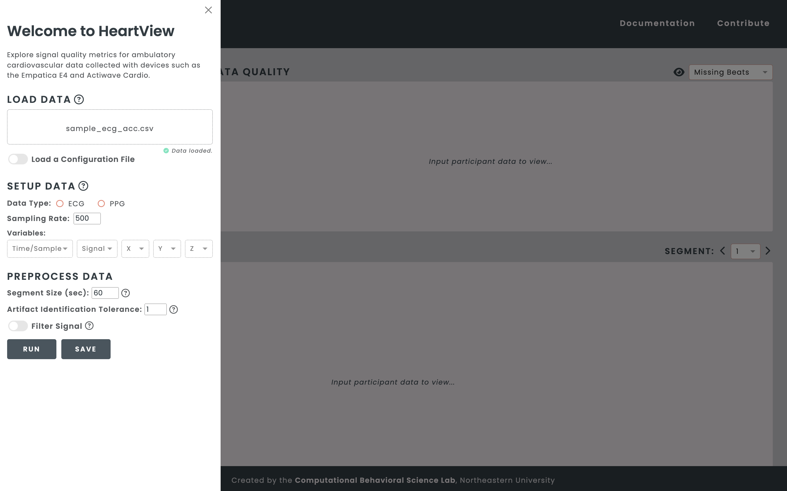
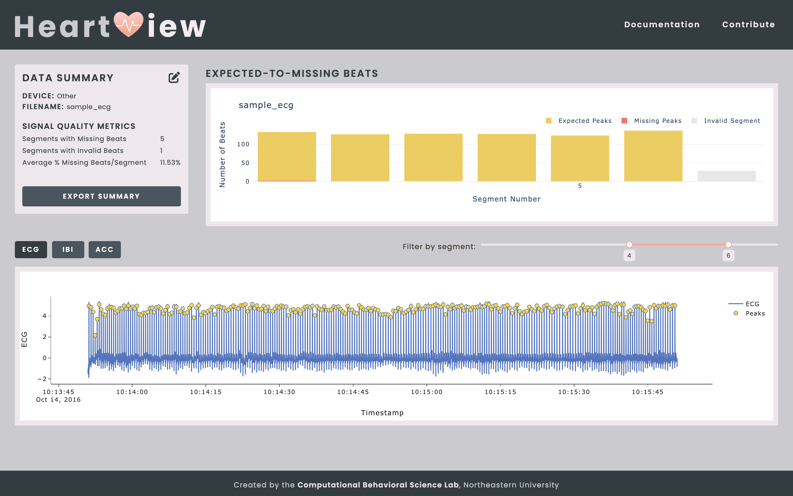
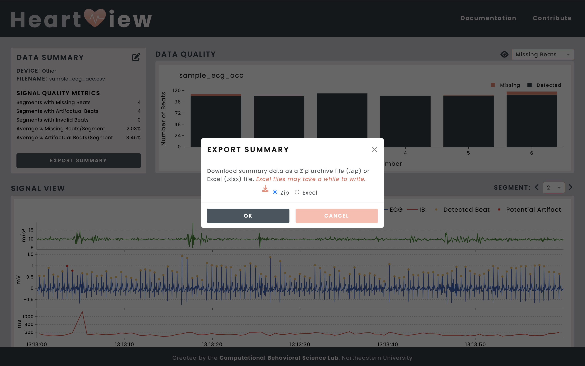
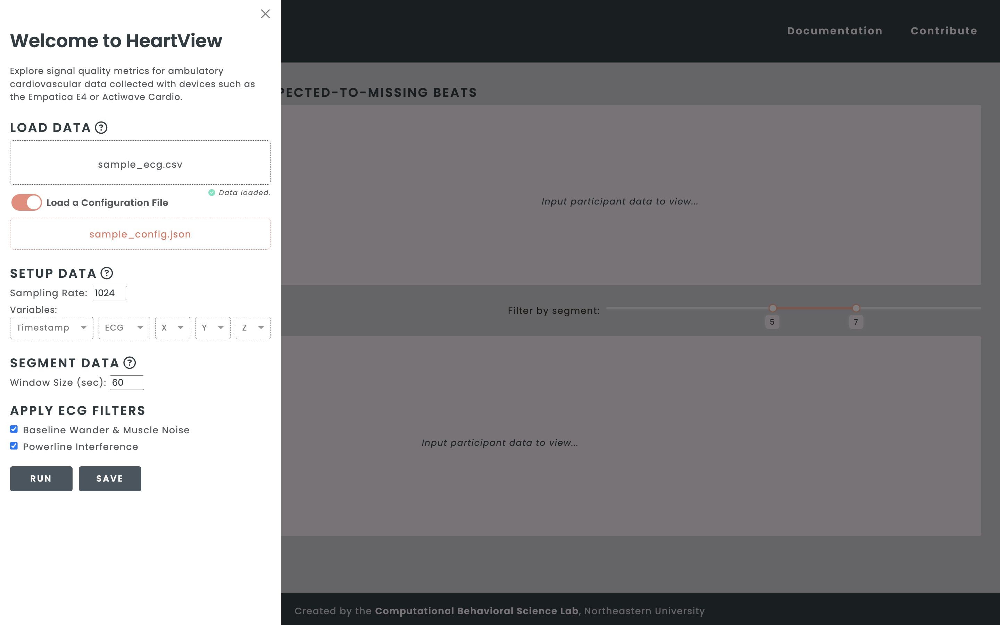

The HeartView dashboard was developed in Python and with the Dash framework, which consists of a Flask server that communicates with front-end React components.
Launching the App¶
Within the activated virtual environment:
(venv) $ python3 app.py
Open your web browser and go to: https://127.0.0.1:8050
Terminating the App¶
In your Terminal, press
CTRL+c.Exit the virtual environment by typing
deactivate.
Using the Dashboard¶
Uploading and Setting Up Your Data¶
Once the dashboard application has been launched in your web browser, select your data file. HeartView will accept raw European Data Formatted (.edf) files from the Actiwave Cardio, archive (.zip) files from the Empatica E4, and comma-separated values (.csv) files from other ECG sources.
In the example below, a CSV file containing raw data from another ECG source is uploaded to the dashboard.
{kind=link}
{kind=link}
{kind=link}
Viewing Signal Quality Metrics¶
HeartView’s main dashboard shows three panels.
{kind=link}
Exporting the Data Summary¶
The Export Summary button in the Data Summary panel allows you to download your data summary as a Zip archive file or an Excel workbook.
{kind=link}
{kind=link}
here.Creating Configuration Files¶
The HeartView dashboard allows you to save your data pre-processing parameters according to your file type in configuration files that can be loaded again in the future for more convenient pre-processing.
{kind=link}
Loading Configuration Files¶
Toggle the Load a Configuration File switch to display the configuration file upload field. Click on Select Configuration File… to load your JSON configuration file.
{kind=link}
{kind=link}